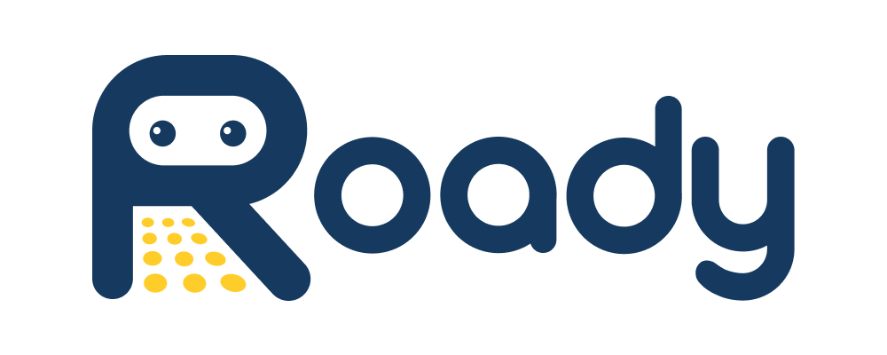
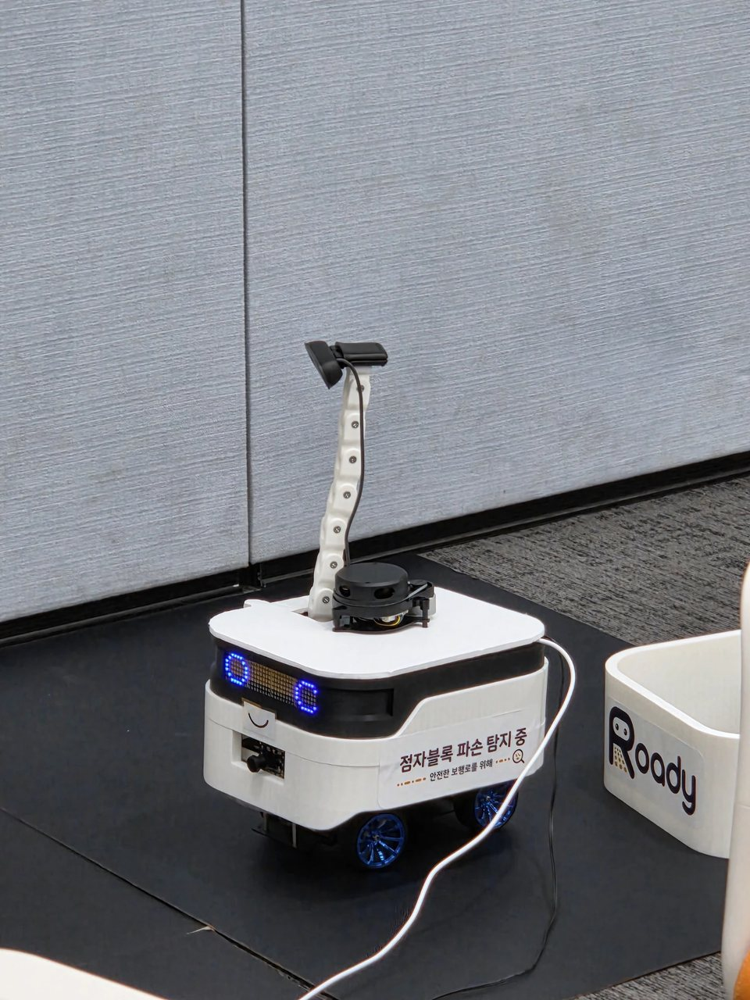
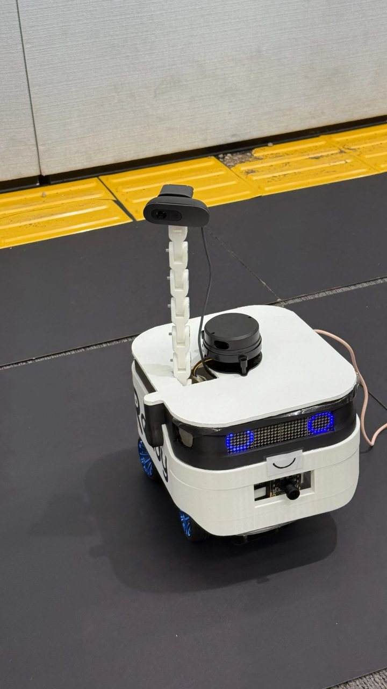
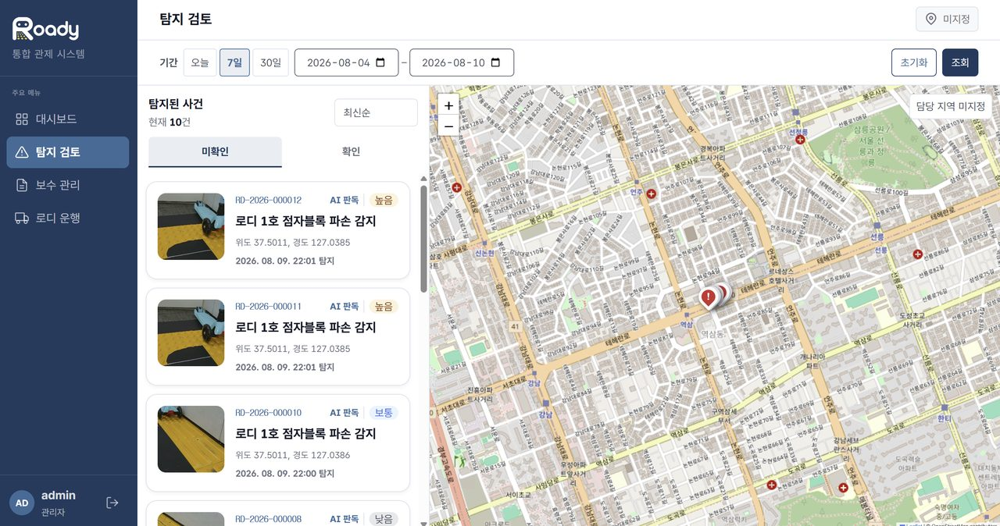
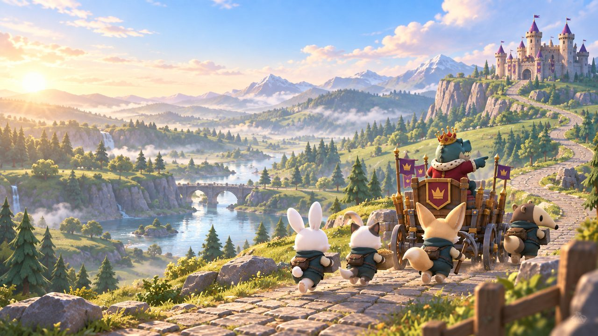
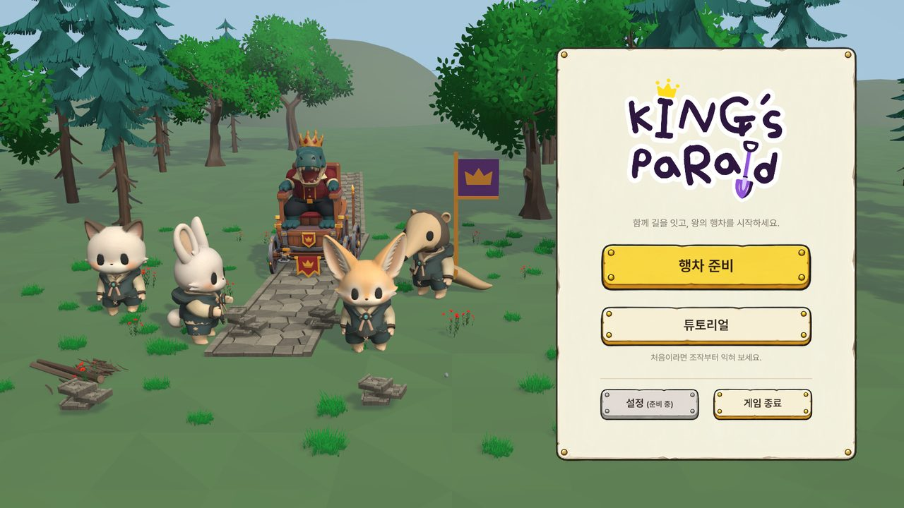
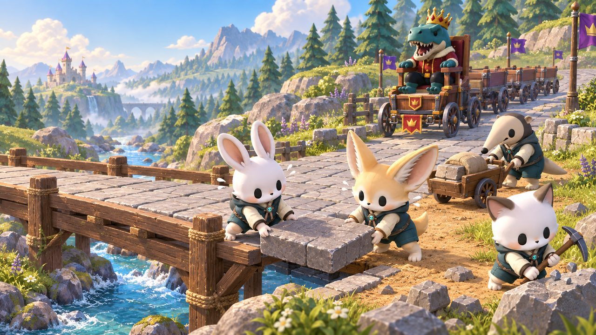
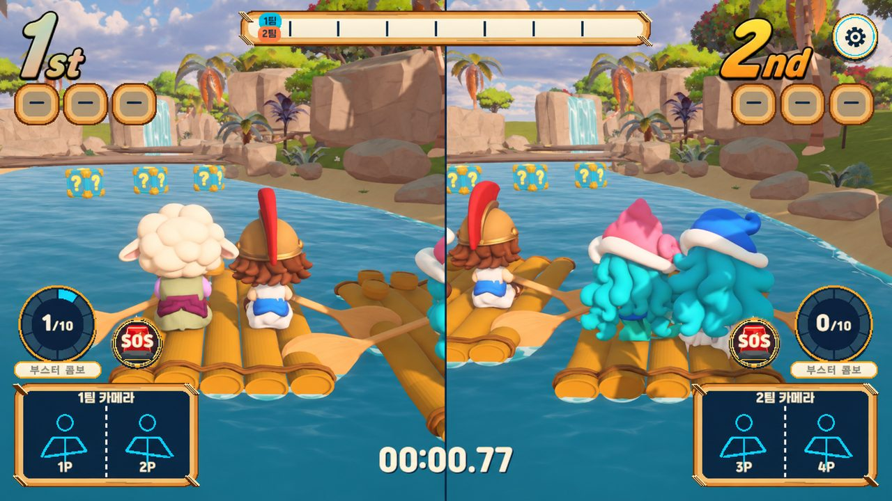
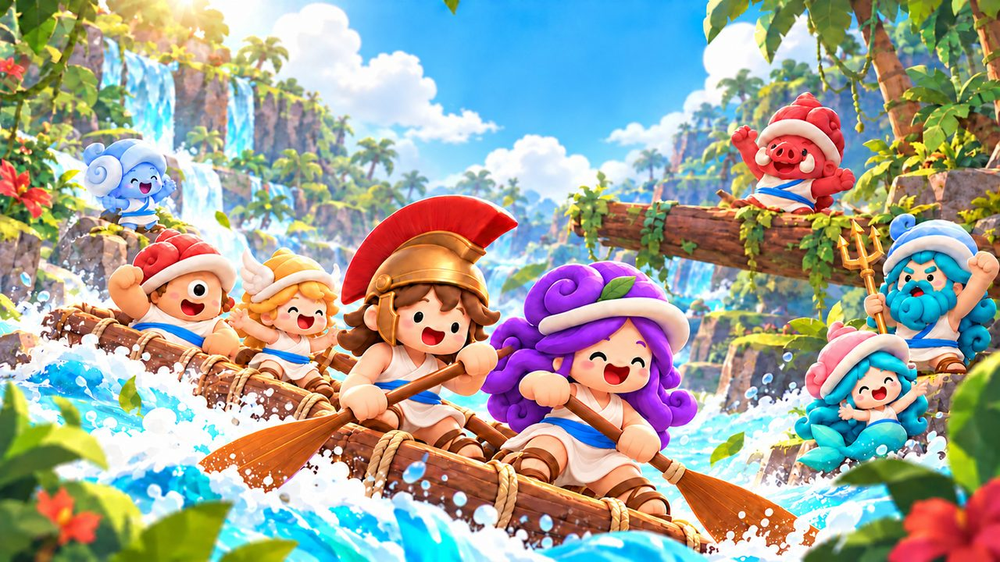
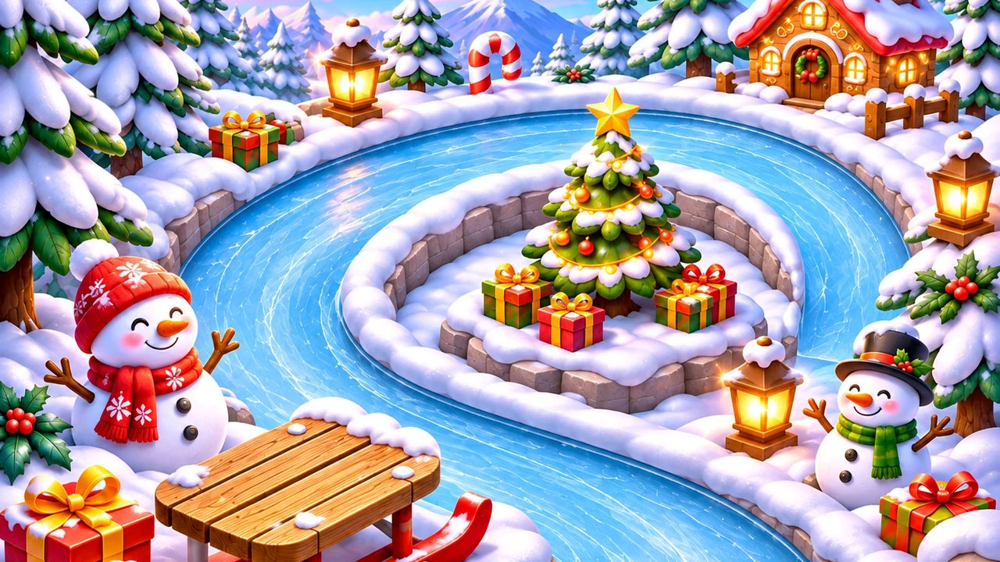

Made to be played.
게임 클라이언트 개발자 양유정
플레이어가 머무는 세계를 만듭니다.
스크롤을 내리면 앞으로 나아갑니다 ↓ 빛나는 표시를 누르면 전시가 열립니다.
01About · 강가의 모닥불
손에 닿는 감각부터,
판을 묶는 구조까지.
안녕하세요, 게임 클라이언트 개발자 양유정입니다. Unity로 코스와 물리처럼 손에 닿는 감각부터, 여러 사람의 입력을 한 판의 흐름으로 묶는 구조까지 만들어 왔습니다.
게임이 거실의 놀이가 되는 순간을 좋아합니다. 그 순간이 더 자연스럽고 즐겁게 느껴지도록 다듬는 일을 합니다.
- 역할
- 게임 클라이언트 · Unity
- 소속
- SSAFY 15기
- 관심
- 모션 인식 · 물리 · 플레이 감각
- 도구
- Unity 6 · C# · Blender
02Awards · 강가의 트로피
받아 온 것들
세 번의 팀 프로젝트와 해커톤을 거치며 받은 기록입니다.
- 2026.11SSAFY 15기 자율 프로젝트 · 노디세이수상명을 적어 주세요
- 2026.09SSAFY 15기 특화 프로젝트 · 왕의 행차수상명을 적어 주세요
- 2026.08SSAFY 15기 공통 프로젝트 · ROADY수상명을 적어 주세요
- 2026NHN 해커톤결과를 적어 주세요
03Skills · 강가의 이정표
손에 익은 도구들
게임 클라이언트 Unity · 물리 · 네트워크
Unity 6C#URPRigidbodyInput SystemNetcode for GameObjects
UI · 콘텐츠 HUD · 상점 · 튜토리얼
uGUITextMeshProScriptableObjectBlender
웹 프론트엔드 관제 대시보드
Vue 3TypeScriptPiniaLeafletVitest
협업 · 검증 이슈 · 빌드 · QA
GitLabJiraUnity Editor 자동화PythonPostgreSQL
04Project 1 · 와이어 협곡

ROADY 로디
2026.07 – 08 · 4주 · Frontend 핵심 개발 · 관제 UX 설계



자율주행 로봇이 점자블록을 따라 이동하며 파손 후보를 수집하고, AI가 파손 유형·심각도·보수 우선순위를 분석하는 AIoT 관제 서비스. 관리자는 지도와 목록에서 탐지를 검토하고, 보수 요청부터 완료 보고까지 한 흐름으로 관리합니다.
- Vue 3 + TypeScript 공통 기반, 라우팅, 인증, API 클라이언트 구성
- 대시보드 · 지도 기반 탐지 조회 · 사건 상세 · 보수 요청/완료 화면 개발
- AI 제안과 관리자 확정값을 분리한 Human-in-the-loop 판정 흐름 설계
- KRDS 기준 공통 UI와 키보드 접근성, Vitest 회귀 테스트 작성
Vue 3TypeScriptPiniaLeafletChart.jsVitest
자정 전후 날짜 필터 오차KST 고정UTC 변환 대신 로컬 날짜 유틸 · 종료일은 다음 날 자정 · 월말·윤년 경계를 테스트로 고정
실시간 갱신 때 지도가 초기화뷰포트 유지최초 자동 맞춤과 열린 팝업 ID를 분리 관리 · 상세 진입은 말풍선 액션에서만
회귀 테스트293개 통과39개 테스트 파일 중 36개 직접 작성 · 컴포넌트·스토어·유틸·API
05Project 2 · 사막의 행차
왕의 행차 King’s PaRaid
2026.08 – 09 · Unity 클라이언트 · UI/UX · 수레·마차 시스템



1~4명의 신하가 멈추지 않는 왕의 마차 앞에서 돌·모래·나무를 캐고, 수레로 도로를 만들어 깔며 행차를 완주시키는 실시간 협동 파티 게임. Rust 전용 서버와 Netcode로 온라인과 LAN을 지원합니다.
- 대기실 · 튜토리얼 · HUD 프로필 · 정비소 HUD 등 인게임 UI 전반
- 커스터마이징 상점(54종)과 수레 업그레이드 마트 구현
- 수레 도로 제작 연출, 후속 수레 바퀴 회전, 마차·수레 탑승 이동
- 음성 채팅 상태 UI와 대기실 시스템 채팅 알림
Unity 6Netcode for GameObjectsuGUIInput SystemWebRTC
후속 수레 바퀴가 돌지 않음EditMode 17/17단일 메시를 런타임에 차체와 네 바퀴로 분리 · 이동 거리와 반지름으로 회전
마차·수레 탑승 이동20Hz 동기화높은 곳에서 올라탄 플레이어만 발밑 수레를 따라감 · 왕 머리를 밟으면 기분 추가 차감
수레 업그레이드 마트3상품 × 2단계부품을 들고 수레에 부착할 때만 결제 · 서버가 거리·잔액·단계 검사
06Project 3 · 눈 내린 밤
노디세이
2026.10 – 11 · Unity 클라이언트 · 6인 팀



카메라 한 대로 네 사람의 동작을 인식하는 4인 모션 레이싱. 가족이나 친구 네 명이 두 팀으로 나뉘어 노를 젓고, 박자를 맞추면 가속해 먼저 집에 돌아온 팀이 이깁니다. 강·동굴 코스와 보트를 만들고, 네 명의 입력을 한 판의 경기 흐름으로 묶었습니다.
- 강·동굴 코스 ‘포세이돈의 물장난’의 급류·폭포·동굴과 복귀 지점 설계
- 보트의 관성·충돌·부력과 노 젓기 애니메이션 구현
- MediaPipe 인식 결과를 좌석별 노에 연결, 공통 HUD·자동 출발·장애물·아이템 통합
- 설원 맵 ‘산타의 눈 내린 밤’ 선택과 출발 기록을 서버 카탈로그에 연결
Unity 6URPInput SystemMediaPipe 연동
급류 오르막 부력0.6m → 0.12m수면과의 상대 수직 속도로 부력 보정 · 최대 잠김 깊이, Unity Play 검사 84개 통과
제품 씬 통합3회 연속 경기진입·UI·경기 씬의 책임을 나누고 추가 로드로 HUD 공유 · 재시작·결과·씬 정리 검증
악어 탈출 판정3회 → 1회박수 순번이 갱신될 때만 응답 인정 · 동작 1회당 응답 1회, 팀별 격리 확인
07Contact · 설원의 집
여정의 끝,
불 켜진 집에서.
여기까지 와 주셔서 고맙습니다. 함께 만들고 싶은 것이 있거나 궁금한 점이 있다면 편하게 연락 주세요.